下面全部是真实页面的渲染截图（不是手绘 mock）：CDP 打开 site/index.html 与 site/app.html，运行时注入候选配色变量后原样截屏，所以按钮、药丸、卡片、代码块、工作台面板都是真的。四个候选共用同一套语法高亮色（紫键名 / 深绿字符串 / 琥珀数字 / 砖红布尔），唯一变量是品牌主色——差异可干净归因。
看三处即可判断：① 顶栏「在线试用」药丸与主按钮；② 代码块里字符串的绿会不会和主色混淆；③ 工作台顶栏品牌区与焦点蓝是否还有两套强调色打架。
绿 #3ab54a。与字符串语法色**完全同值**，且与数字浅蓝、键名品红三色并存；白底对比度 2.66:1，未达 AA。
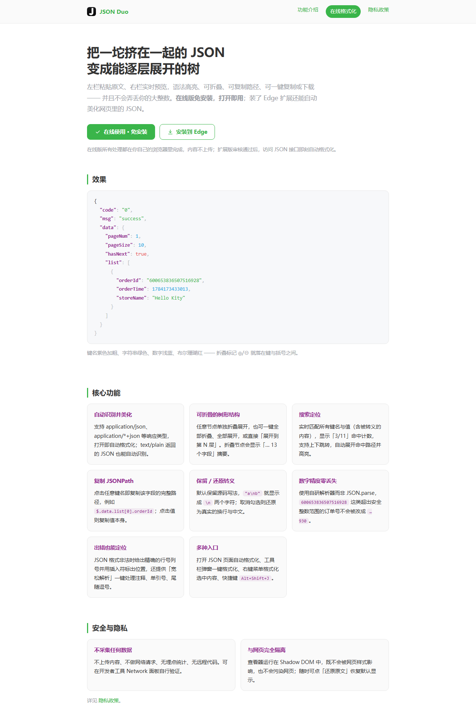
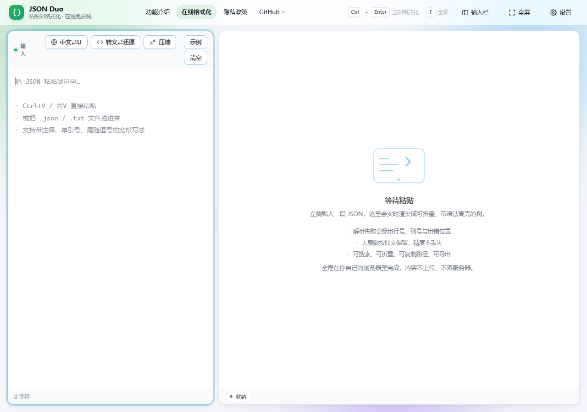
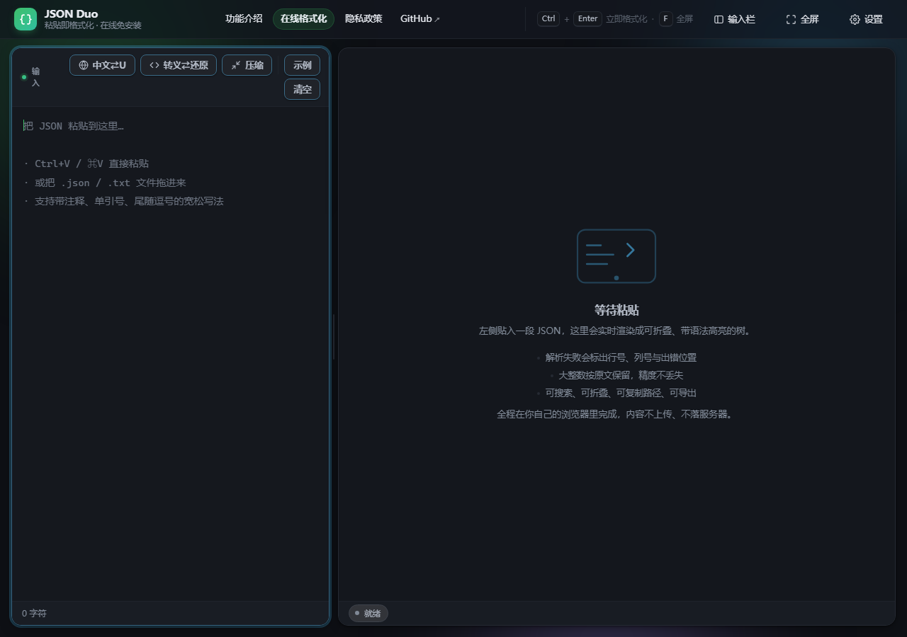
主色 #2563EB，与图标「黑白编辑器」气质同源，与四色语法高亮**全部错开**。白底 5.17:1 达标；开发者工具的心智色（DevTools / VS Code）。
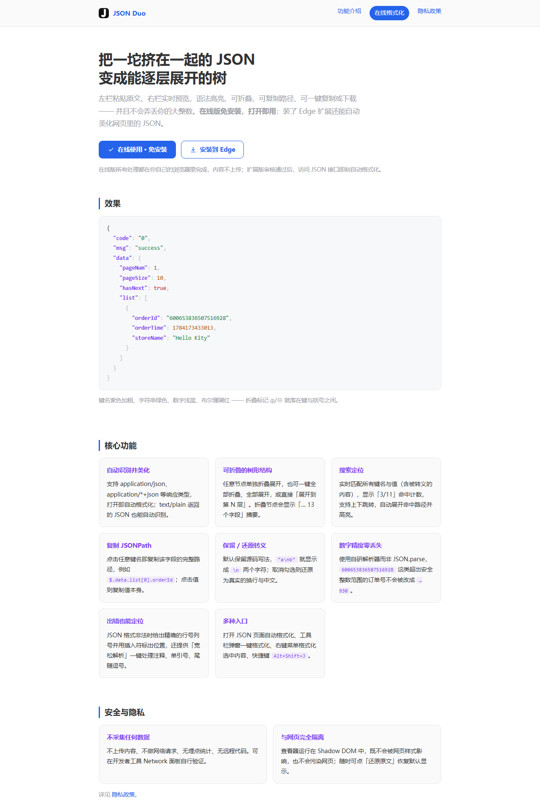
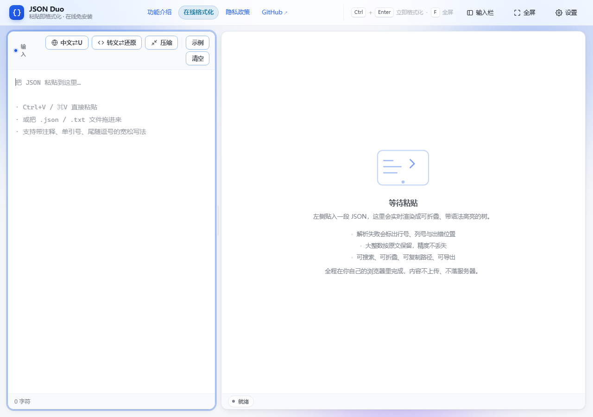
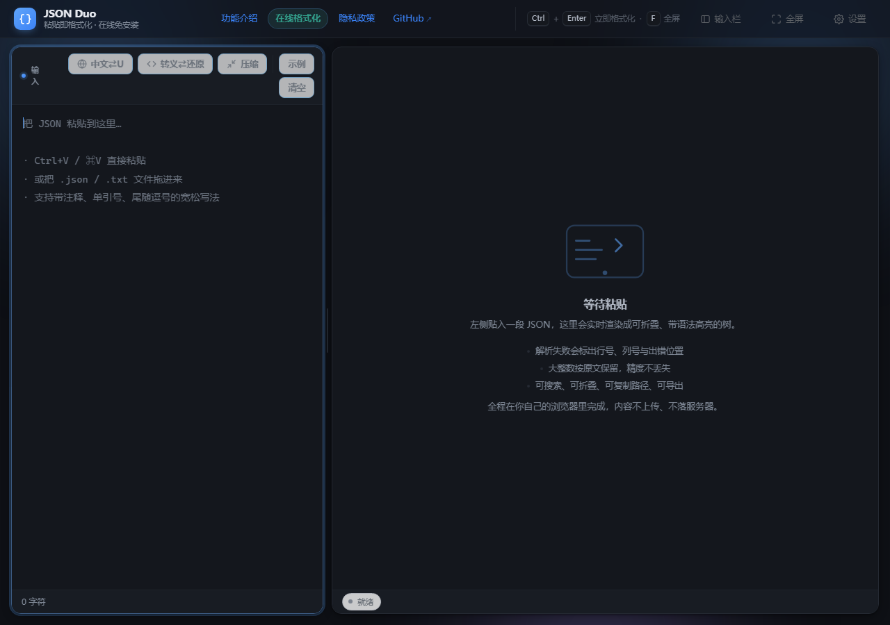
主色 #0F766E。品牌从绿到青的**连续过渡**，改动最小、观感最稳；但青与字符串绿同属绿系（色相差约 33°），分离度弱于 A。白底 5.47:1 达标。
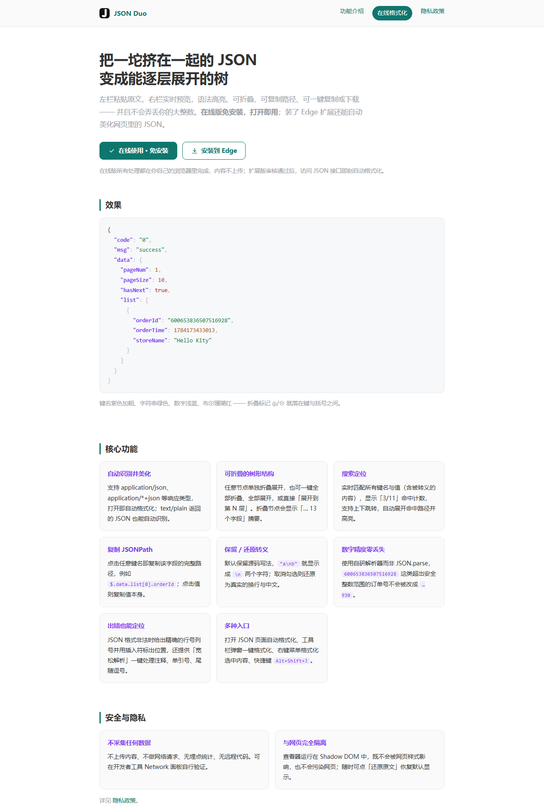
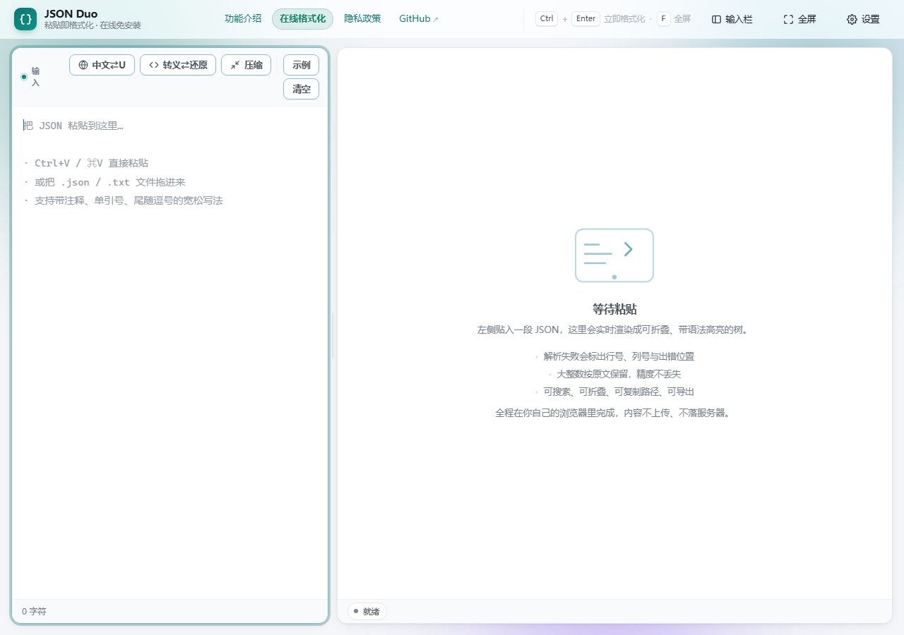
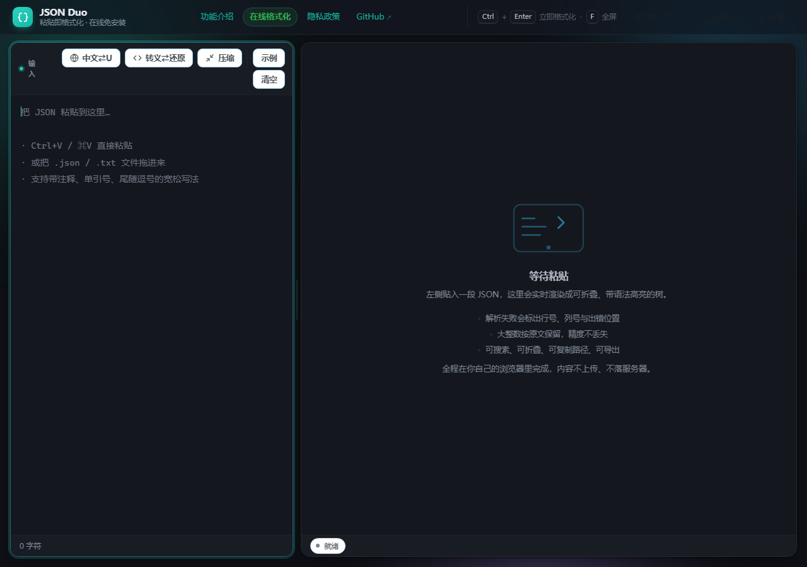
主 CTA 用近黑 #0F172A，**与图标底板同色**，品牌识别最直接；焦点/链接另用蓝 #2563EB。最克制、最像编辑器，但按钮的「可点击感」弱于 A。
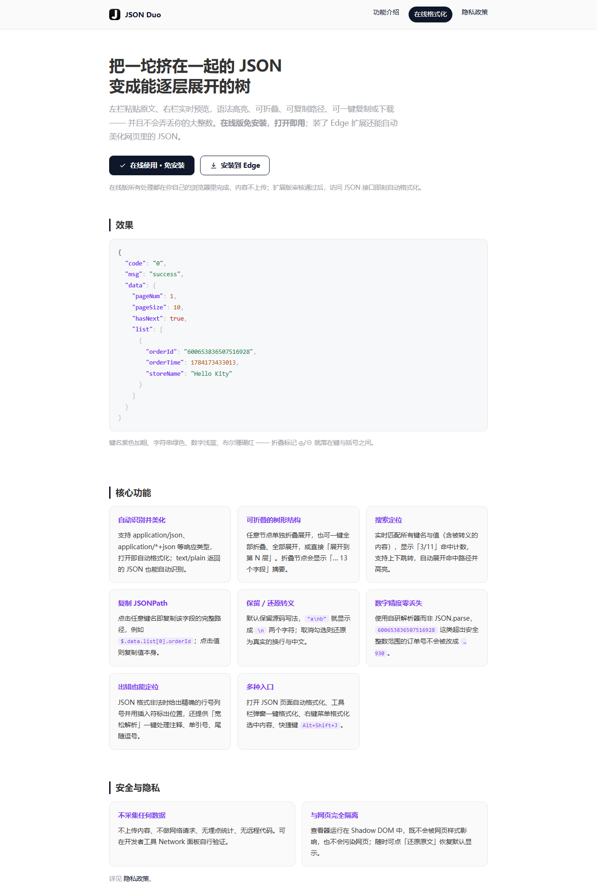
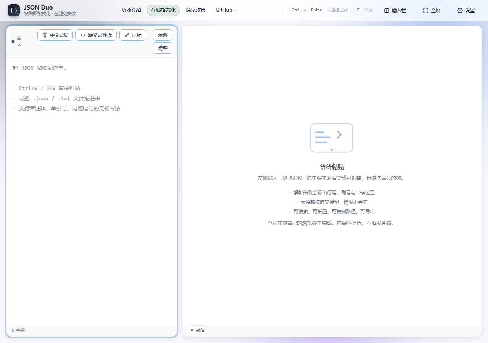
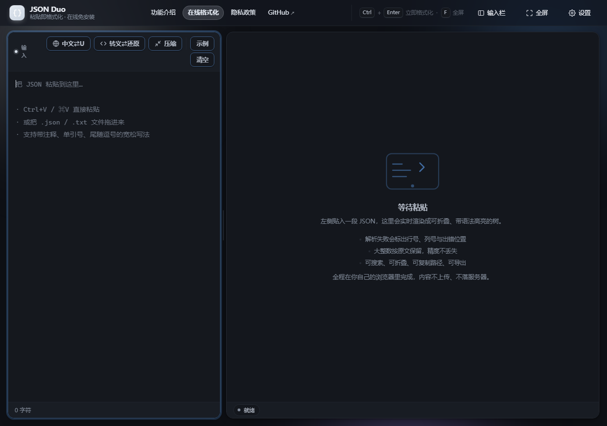